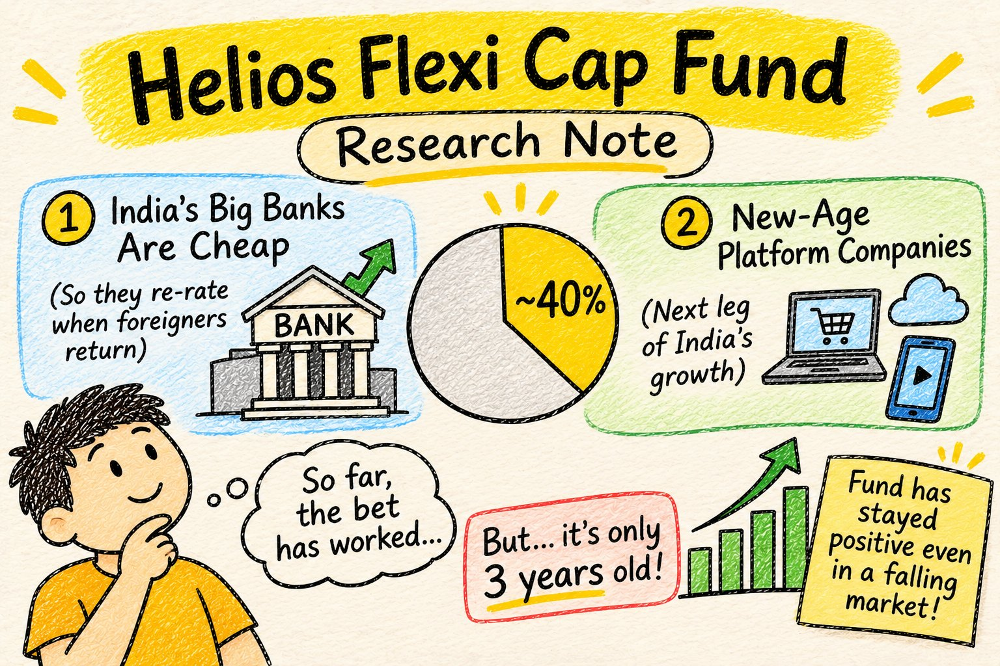

Helios Flexi Cap: a two-part bet on cheap banks and new India
Samir Arora's fund has stayed positive while the market fell. We opened the portfolio to see what it is really betting on, what has worked, and where the thinking is weaker.


- Helios Flexi Cap is a two-part bet. Big Indian banks that foreigners sold, and new-age platform companies. Together they are about 40% of the fund.
- So far it has worked. Over the last year the fund made 2.2% while the Nifty 500 lost 2%. Since launch it is about 5 points a year ahead.
- But it is only 3 years old, and its biggest bet, the banks, has not paid off yet. Part of the bank fall was not foreign selling at all.
- Our view: a sensible satellite fund for patient investors, at 10 to 15% of equity. Not a core holding yet.
A screenshot on WhatsApp
Mr. Gokhale runs a small CA practice in Deccan. He is 46, careful with money, and has a sensible portfolio: an index fund and a flexi cap fund at the core, SIPs running for eight years.
Last week he sent us a screenshot. Every fund in his watchlist was in the red for the year. One was green: Helios Flexi Cap.
"This one is positive when everything else is negative," he wrote. "Should I move my money there?"
Our answer was the same one we give for any fund. Before you invest, understand what you are buying. So we opened the October portfolio, read the fund house presentation, and checked the manager's thinking against the data.
Who runs it and how they think
Samir Arora founded Helios in 2005, after ten years as CIO of Alliance Capital's India business. Helios has run its flagship Singapore fund for more than 20 years. The mutual fund in India is newer. Its first scheme came in 2023.
The core idea is simple: first decide what not to buy. Helios calls it Elimination Investing. Their own data shows that about half of Nifty 500 stocks beat the index in a given year, and about one third do really badly. So instead of hunting for the single best stock, they first remove the likely losers.
Every stock is rated Bad, Not Bad or Good on eight points:
ThemeIs the opportunity big enough?
IndustryIs the industry healthy to compete in?
DisruptionCan something new kill this business?
Management and strategy
Corporate governance
Quality of accounting
Medium term triggersIs something about to go wrong?
ValuationIs it too expensive?
A "Bad" on any of the first six means the stock is out for good. A "Bad" on seven or eight means "maybe later". Only stocks with no "Bad" anywhere can be bought.
What survives is split into two kinds:
- High confidence, reasonable returns
- Proven leaders with a moat and clear earnings
- No re-rating needed. Steady earnings growth is enough
- Low turnover. Sold when too expensive or the story changes
- Reasonable confidence, high returns
- Companies being discovered or re-discovered
- The extra return comes from a re-rating
- Higher turnover. Sold if the trigger fails or the price runs ahead of earnings
A re-rating simply means the market starts paying a higher price for the same profit. That is where the "emerging" half hopes to make its extra return.
One line in the Helios presentation matters more than it looks. Emerging good stocks can also be large caps where they see a trigger for recovery or re-discovery by the market. Keep that in mind. It explains the biggest bet in the fund.
On holding period, Helios treats a long term view as a series of one to three year views. If the story holds, they hold for another one to three years. Arora also stays almost fully invested. He does not time the market. He rotates between stocks instead.
So what is the fund actually betting on today? Two things, and together they are about 40% of the money.
Bet one: the big banks
ICICI Bank is the fund's largest holding at 4.92%. HDFC Bank is third at 4.09%, Kotak sixth at 3.24% and SBI eighth at 2.70%. Together that is about 15% of the fund in four banks.
Samir Arora's argument, in simple words:
Bank stocks have done poorly for about three years.
The reason is not bad business results. The reason is foreigners selling.
Foreigners mostly sell what they own most, and they own the big banks most.
When foreigners come back, they will buy the same big, liquid stocks first. That means large banks.
So the banks are cheap for a temporary reason. That is a re-rating waiting to happen.
He has said this publicly. As early as May 2025, he said foreign investors would return and pick banking and financial stocks first. This is the "large cap emerging stock" from the Helios process. Safe, big businesses, owned for a re-rating.
What the data supports
The foreign selling is real, and huge. Foreign ownership of Indian stocks fell to a 14 year low of 16.13% in March 2026. Foreign funds have sold about ₹2.8 lakh crore of Indian shares in 2026 so far.
Banks took the biggest hit. In January to March 2026 alone, foreigners sold about ₹45,000 crore of HDFC Bank and ICICI Bank.
The business numbers are fine. In April to June 2026, loans grew 15% at HDFC Bank and 19% at ICICI and Axis. HDFC Bank, Kotak and Axis trade below their own average valuations of the past.
India itself is cheap against other emerging markets. India's valuation premium over emerging markets shrank to 18% in June 2026. The long term average is 73%.
India is not being singled out. The Helios presentation shows India took only about 13% of foreign outflows from Asian emerging markets. Korea alone took about 62%.
Where the argument is weaker
Not all of it was foreign selling. HDFC Bank's 2026 fall came with a governance crisis and regulatory scrutiny. The RBI appointed Keki Mistry as interim chairman. The stock is down about 29% this year and hit a 31 month low of ₹681.90 in September. Other analysts say foreigners also want to see lower loan to deposit ratios and steady margins before they return.
Foreigners may not come back to the same stocks. Arora himself says foreigners have rotated out of old large caps into a wider set of Indian companies, rather than leaving India. Recent reports say foreign money is returning to India but still skipping banks.
Domestic money already bought the dip. Mutual funds raised their HDFC Bank holding from 26.66% to 29.54% in one quarter. The shares have moved into strong hands. But that also means part of the "cheap" price is already gone.
Timing is unknown. The thesis needs a trigger: a weaker dollar, a trade deal or an index weight change. Nobody can say when that comes.
Bet two: new-age India, and the rest of the portfolio
One in every three rupees is in financial services. But it is spread across four different bets, not just banks.
The capital markets bet is interesting. MCX, 360 ONE, ICICI Pru AMC, Groww, Motilal Oswal, SBI Funds, HDFC AMC and CAMS. Every one of them earns more as Indians move savings from FDs and gold into shares and funds.
The new-age bet is about 25% of the fund. Eternal (Zomato) is the second largest holding at 4.66%. Paytm is fifth at 3.48%, and Ather Energy is tenth at 2.62%. Others include Swiggy, Groww, PhysicsWallah, Rentomojo, Zetwerk, Delhivery, Honasa (Mamaearth), CarTrade, Pine Labs and Vishal Mega Mart. Many of these are recent IPOs. This fits Arora's stated liking for platform companies where growth is visible year to year.
What is missing tells you as much. There are almost no large IT services companies (only Coforge and Netweb). Very little FMCG (ITC and Marico, under 2%). No metal producers, and only 0.17% in Coal India. The fund is clearly steering away from old economy and slow growth names.
By size, the fund is mostly large caps, with a real share in mid and small caps. Large caps have stayed at about 50 to 60% since launch.
Performance: ahead by falling less
The fund has beaten its benchmark in every period, mostly by falling less when the market fell.
A monthly SIP since launch shows the same picture: 6.49% a year in the fund (Regular), against 0.81% in the Nifty 500 TRI.
What this tells us:
The extra return is real, but youngAbout 5 points a year over the index, in under three years. There is no full three or five year record yet.
Most of the gain came in the first yearThe two year return is only about 2% a year. The fund has protected money well in a bad market, but has not made much in absolute terms recently.
Always fully investedCash is under 2%. The fund will not protect you in a crash by sitting in cash. It relies only on stock selection.
Regular vs DirectThe Regular plan trails Direct by about 1.4% a year. That gap is the distribution cost, which pays a distributor to choose, track and review the fund with you. If you are comfortable doing all of that yourself, Direct is cheaper. Either way, know what you are paying for.
Concentration is worth watching. The top 20 stocks are 55% of the fund. About 7% sits in three Adani group companies (Ports, Enterprises and Energy Solutions), with Adani Ports alone at 3.91%. That group carries headline and governance risk.
Risks, in one place
Who it suits, and who should skip it
- Investors with a five year or longer view who can sit through two or three slow years
- Those who already have a core flexi cap or index fund and want a different style alongside
- Aspirational bucket money, at about 10 to 15% of equity
- You are a first time investor looking for one main fund
- You will panic if banks stay flat for another year
- You already hold a lot of banks and new-age stocks directly
The fund turned three on 13 November. The November factsheet, due in early December, will show its first full three year return. We will look at it again then.
Every month we track six things: the big 4 bank weight, foreign flows into Indian banks, HDFC Bank governance news, the new-age weight and any big exits, the Adani weight, and the rolling one year return against the Nifty 500 TRI.
My take
Mr. Gokhale did not move his money. His index fund and flexi cap fund stay as the core. They are doing their job, even in a red year.
What Helios offers is a different way of thinking: remove the losers first, then back a few clear themes with conviction. The process is disciplined and the early results are strong. The bank bet has a margin of safety. But its timing is uncertain, and it is not only about foreign selling.
A green number in a red year is a good start. It is not yet a track record. As a satellite, sized so that two slow years would not shake you, it makes sense. As your main fund, not yet.
Atharva
Thinking about a fund like this?
Send me your WhatsApp number. I'll check how much it overlaps with the funds you already hold, and whether it fits your plan as a satellite. No spam. No calls unless you ask.
Sources: Helios Flexi Cap portfolio statement, 31 Oct 2026, and fund presentation, Oct 2026 (Helios MF). Returns to 30 Sep 2026. Market reports: Business Today, ET Now via inkl, Outlook Business, Multibagg, Kotak Neo, Upstox, Business Today, Whalesbook.
Disclosure: This is research for learning only. It is not personal investment advice and not a recommendation to buy, sell or hold any fund or stock. Stocks named are the fund's holdings, shown for understanding only. Mutual fund investments are subject to market risks; read all scheme related documents carefully. Past performance may not be sustained in future. Savitr Investments distributes mutual funds and may earn a commission from the fund house if you invest in any fund, including this one, through us. Mr. Gokhale is a fictional character. Atharva, Savitr Investments, Pune. AMFI registered Mutual Fund Distributor, ARN 291687 · SEBI Authorised Person, AP0297580391.